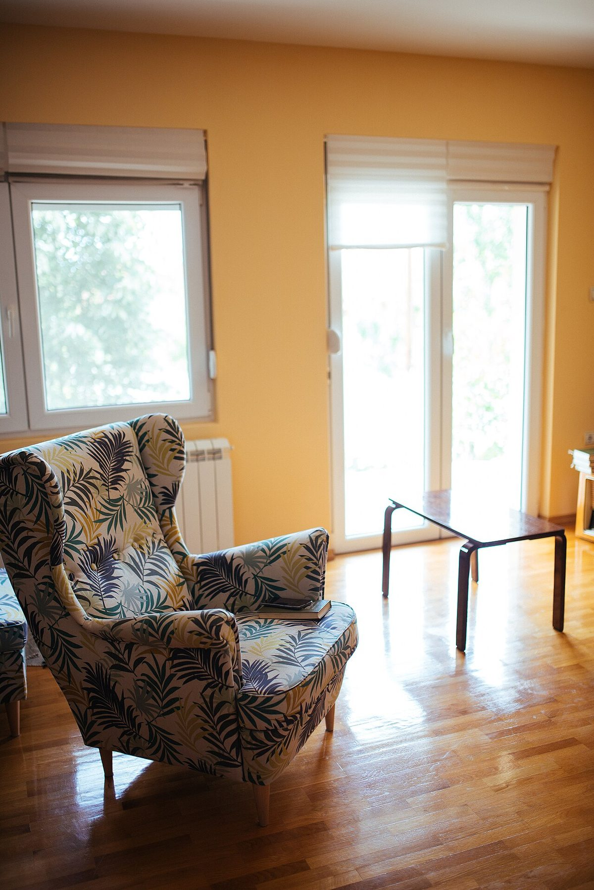
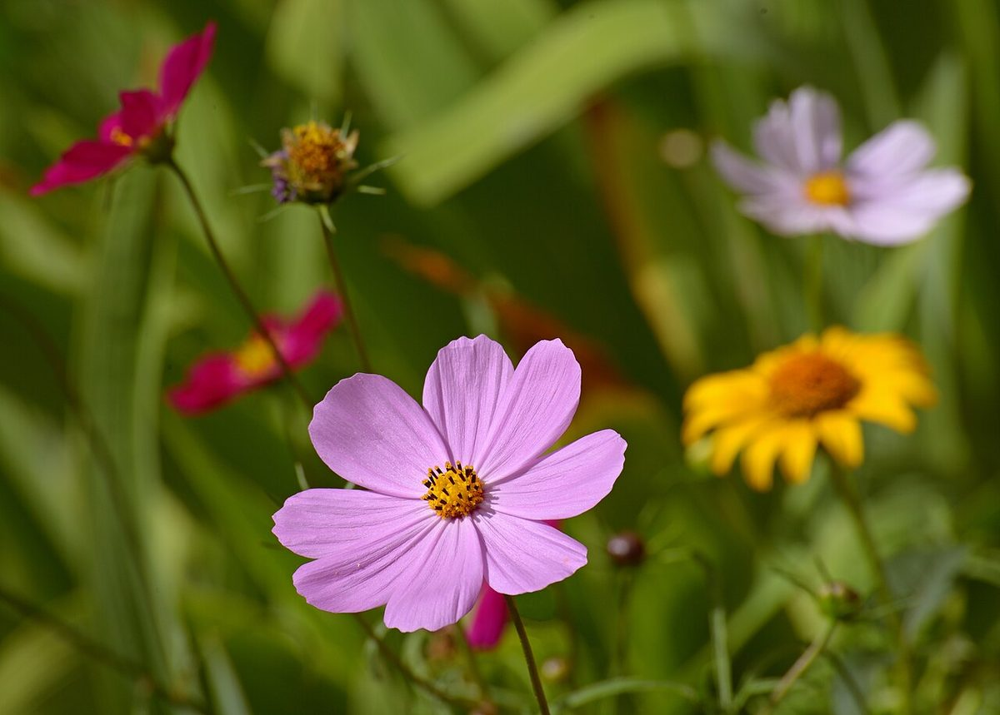

口コミ(イメージ例)
ホームページ完成後に、こんな形でお客様の声を載せられます、というサンプルです。内容はすべて創作です。
このページは実際のお客様の声ではありません。制作側が作成したイメージ例です。
-

イメージ写真(店舗の実際ではありません) イメージ例「にぎやかすぎず、静かな気持ちで過ごせました。長居してしまいそうです。」
※創作のイメージ例です
-

イメージ写真(店舗の実際ではありません) イメージ例「ふらっと立ち寄れる雰囲気でした。季節が変わったころに、また寄りたいと思います。」
※創作のイメージ例です
-
イメージ写真(店舗の実際ではありません) イメージ例「お店の場所が地図で分かりやすく、迷わず着けました。」
※創作のイメージ例です